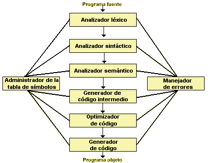
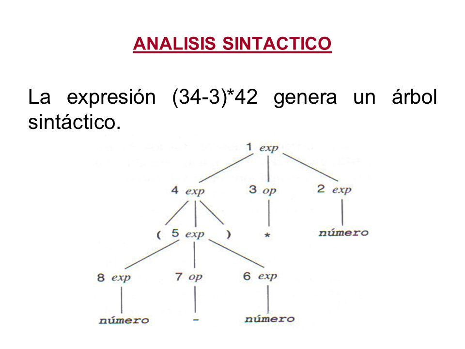

Los Compiladores y su Vinculación con la Teoría de Autómatas y Lenguajes Formales
Un compilador es un software que convierte el código fuente, escrito en un lenguaje de alto nivel (como C, Java, o Python), a un lenguaje de bajo nivel o lenguaje máquina, que es comprensible y ejecutable por una computadora. Este proceso de traducción implica varias fases, desde el análisis léxico hasta la generación de código ejecutable. La función principal de un compilador es asegurar que el programa fuente siga las reglas del lenguaje y sea correcto en términos de sintaxis y semántica.
El análisis léxico es la primera fase, en la que el compilador divide el código en componentes llamados tokens. Los autómatas finitos deterministas se utilizan para reconocer estos tokens de manera eficiente.
Los autómatas finitos deterministas son especialmente útiles para reconocer tokens, ya que pueden procesar el texto de entrada y tomar decisiones basadas en el estado actual y el próximo carácter. Por ejemplo, si un DFA identifica una secuencia como “int,” la clasifica como una palabra clave en lugar de un identificador.
El análisis sintáctico organiza los tokens en un árbol sintáctico, que representa la estructura del programa. Esto se basa en gramáticas libres de contexto, que definen las reglas de sintaxis de un lenguaje de programación.
En el análisis semántico, el compilador valida la coherencia del código, comprobando la correcta asignación de tipos y el flujo de control. Esta fase garantiza que el programa sea válido en términos de lógica y semántica.
La optimización mejora la eficiencia del código intermedio sin alterar su funcionalidad. Esto hace que el código final sea más rápido y utilice menos recursos.
La fase final del compilador traduce el código intermedio optimizado al lenguaje máquina específico de la arquitectura del sistema de destino.
La Teoría de Autómatas y Lenguajes Formales proporciona las bases matemáticas para construir compiladores robustos y predecibles. Estos conceptos permiten a los compiladores analizar y procesar el código de manera eficiente, y su comprensión es esencial para quienes se dedican al desarrollo de lenguajes y herramientas de análisis de código.